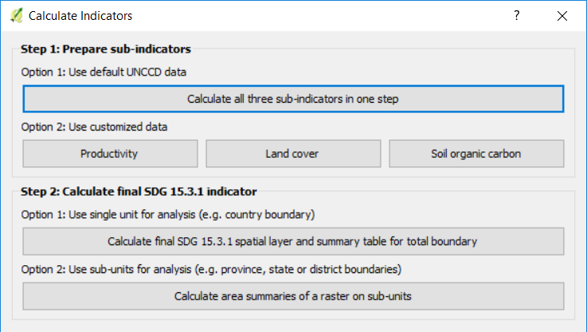

Run 1-step subindicators¶
Objective: Learn how to run SDG 15.3.1 sub-indicators (changes in land productivity, land cover and soil organic carbon) using Trends.Earth and the default data: LPD from JRC for land productivity, ESA CCI for land cover, and SoilGrids for soil organic carbon. In this tutorial we will use Uganda as an example, but you can choose any study area.
Estimated time of completion: 35 minutes
Internet access: Required
Search for the Trends.Earth toolbar within QGIS, and click on the Calculate icon (
 ).
).

The Calculate Indicators menu will open. In that window, click on Land degradation indicator (SDG indicator 15.3.1)

Select Calculate all three sub-indicators in one step button found under Step 1 - Option 1.
In the Setup tab, select the years of analysis (2000-2015) and make sure that the UNCCD default data is selected, and click next.
Note
Refer to the SDG Indicator 15.3.1 section of this manual to learn about the Trends.Earth productivity indicators developed following the UNCCD Good Practice Guidance (GPG).
In the Land Cover Setup tab you have the option of using the default aggregation method proposed by the UNCCD default data or you can customize the aggregation of the legend from the original ESA CCI land cover classes to the 7 required for UNCCD reporting. To customize it, click on Edit definition and the Setup aggregation of land cover data window will open.

In this window you will see the original ESA CCI land cover class in the column Input class and the final aggregation in the column Output class. To change the output class simply click in the drop down arrow next to the color, and select the final output class you want the input class to be reassigned to. Note that this step is only needed if you consider that the default aggregation scheme does not represent the conditions of your study area.
When you are done editing, click Save definition file. This option will save you time next time you run the tool, by simply loading the definition file you previously saved.
Click Save to continue

You will be back at the Land Cover Setup tab, click Next.
The Define Effects of Land Cover Change tab is where you define the meaning of each land cover transition in terms of degradation. Transitions indicated in red (minus sign) will be identified as degradation in the final output, transitions in beige (zero) will be identified as stable, and transitions in green (plus sign) will be identified as improvements.
For example, by default it is considered that a pixel that changed from Grassland to Tree-covered will be considered as improved. However, if in your study area woody plant encroachment is a degradation process, that transition should be changed for that particular study area to degradation (minus sign).
If you have made no changes to the default matrix, simply click Next.
If you did change the meaning of some of the transitions, click on Save table to file… to save the definition for later use. Then click Next.
In the Area tab define the area of analysis. There are two options:
Use provided country and state boundaries: If you want to use this option make sure the Administrative area option is highlighted, and then select the First Level (country) or Second Level (state or province depending on the country).
Note
The Natural Earth Administrative Boundaries provided in Trends.Earth are in the public domain. The boundaries and names used, and the designations used, in Trends.Earth do not imply official endorsement or acceptance by Conservation International Foundation, or by its partner organizations and contributors.
If using Trends.Earth for official purposes, it is recommended that users choose an official boundary provided by the designated office of their country.
Use your own area file: If you want to use your own area of analysis, make sure the Area from file option is highlighted. Then click Browse and navigate to the folder in your computer where you have the file stored.
When you have selected the area for which you want to compute the indicators, click Next.

In the Options tab you can define the Task name and make some Notes to identify the analysis you are running. What information to indicate is optional, but we suggest noting:
Area of analysis
Dates
Indicators run
When done, click Calculate and the task will be submitted to Google Earth Engine for calculations. You will notice that the Calculate SDG 15.3.1 indicator (one-step) window will disappear and you will be brought back to QGIS.
A light blue bar will temporarily show, indicating that the task was successfully submitted. The analysis will be run in Google servers and could take between 5 and 15 minutes depending on the size of the study area (larger areas tend to take longer).

Note
Refer to the Task status & download tutorial for instructions on how to check the status of the tasks submitted and for downloading results from Trends.Earth.